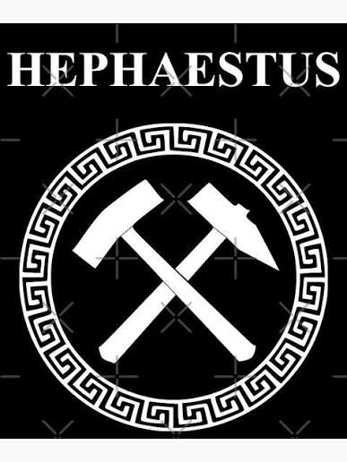
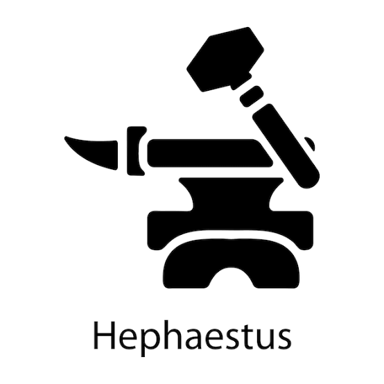
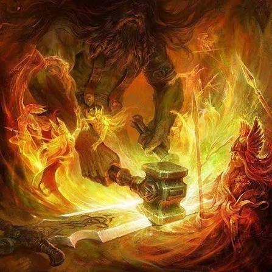
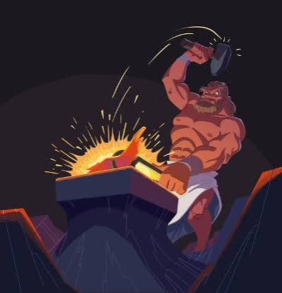
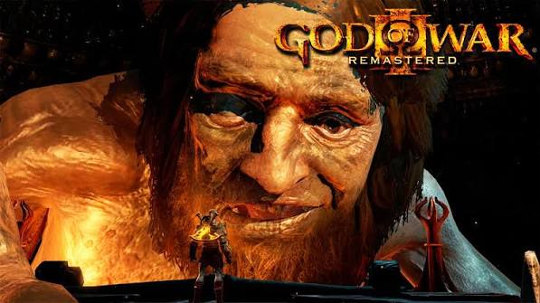
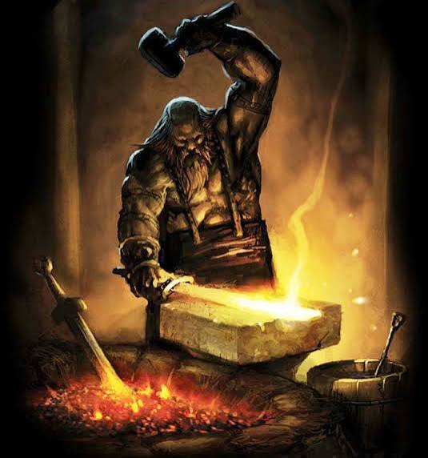
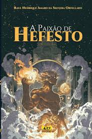

A mitologia é um sistema de crenças composto por uma série de narrativas chamadas de mitos. Esses mitos buscam explicar tudo o que existe e é importante para uma determinada sociedade. Os mitos são histórias que explicam a origem do universo, dos deuses e dos seres humanos.


Mitologia é o conjunto de narrativas sagradas, lendas e crenças criadas por um povo ou civilização para explicar a origem do universo, dos fenômenos naturais, dos costumes e das instituições sociais. Essas histórias são transmitidas de geração em geração, servindo como base para a identidade cultural de um povo.
Hefesto é o deus grego do fogo, da metalurgia, dos ferreiros, artesãos, escultores e dos vulcões. Na mitologia romana ele se chama "Vulcano".
Filho de Zeus e Hera. Em algumas versões, Hera gerou ele sozinha, sem Zeus, com raiva. Rejeitado, foi atirado do Olimpo por Hera ao nascer por ser coxo. Caiu no mar e foi criado por Tétis e Eurínome.





Nos "jogos" ele é ainda mais popular. Em God of War 3 ele é um boss e NPC importante. Aparece como um ferreiro gigante no submundo que forjou a Caixa de Pandora. Em Assassin's Creed Odyssey tem a "Forja de Hefesto" como um local especial onde o jogador consegue fazer upgrade em armas lendárias.
Hefesto continua muito presente nos dias de hoje através de filmes, séries, jogos, quadrinhos e livros. Ele saiu da mitologia antiga e virou referência em várias obras modernas.
Nos "livros", a versão mais famosa é a de Percy Jackson e os Olimpianos de Rick Riordan. Hefesto é personagem recorrente e pai de Leo Valdez na série Os Heróis do Olimpo. Além disso, o nome de Hefesto está em outros lugares. Existe o asteroide 2212 Hephaistos que cruza a órbita da Terra.